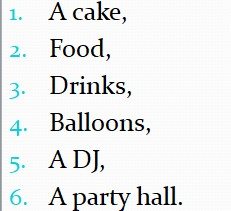

Decomposition is simply the process of breaking down bigger (or complex) problem into smaller more manageable ones.
Musa just graduated from secondary school with a good grade and fortunately for him, it happens to be his birthday.
His father was so happy about his performance and decided to organize a party for him.
He called Musa, congratulated him and gave him the liberty to organize it himself.
With full excitement and anxiety, Musa ran back to his room, pondered about what he needed and wrote down a list of them all.
Have a look at his list;
To be continued...
The moment musa was given the liberty to organize the party himself, what did he do first?
He brought out his pen and paper, then made a list of what he needed just to ease the process for him. That process is called decomposition.
In summary, when you have a problem and then you ease the problem by breaking it down into smaller ones is termed decomposition.